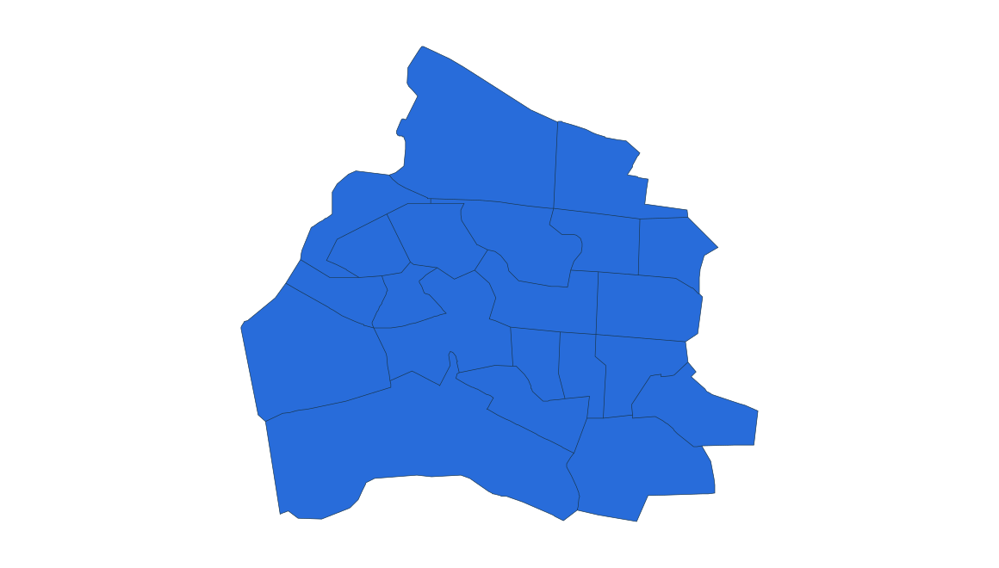
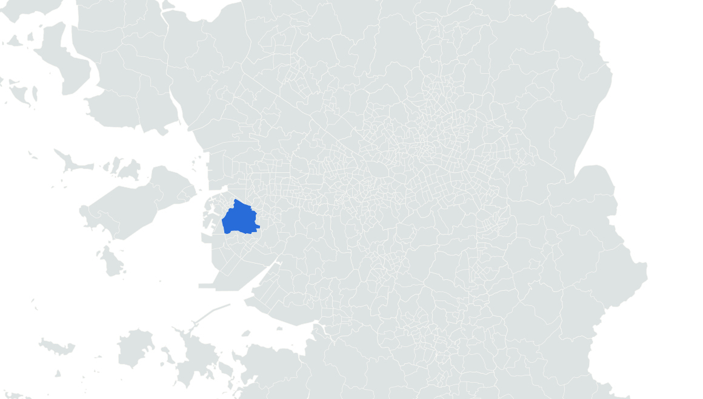

부동산 데이터 | 신혼부부가 사는 곳
10위 인천 미추홀구
2024.11.1 거주 기준 · 신혼부부 전체 · 단위: 쌍

문학경기장 외관
실제 장소 자료사진 · 촬영 2024
사진: Narubaru7 · CC BY 4.0


미추홀구 경계
2024 통계구역 · 수도권 내 위치
옆 순위와 함께 읽는 거주 규모
10위 인천 미추홀구
8,483쌍
11위 서울 노원구
8,473쌍
0
8,000
16,000쌍
노원구보다 10쌍 많음
앞뒤 순위 · 같은 0–16,000쌍 척도
08
???
???
09
???
???
10
미추홀구
8,483
11
노원구
8,473
12
영통구
8,388
2023 → 2024
+420쌍
5.2% 증가
노원구 -3.8%
통계: 통계청 「2023·2024년 신혼부부통계」 수도권 구별 집계 | 지도: SGIS · vuski/admdongkor, CC BY 4.0 · 2024 경계